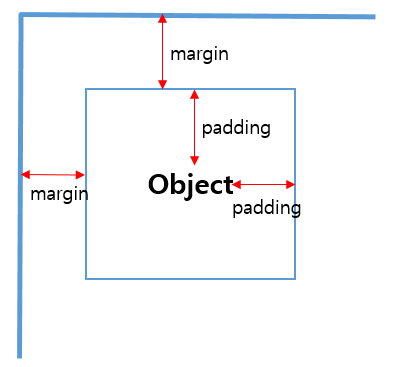
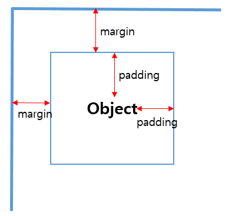

CSS margin and padding
1. margin과 padding의 차이점
margin은 요소와 화면과의 여백(외부여백)을 말하며 padding은 요소내의 내부여백을 의미합니다.


2. margin과 padding의 사용법
방향마다 각각 지정
margin
padding
margin
| margin-top: 10px; | 요소의 위쪽 바깥쪽 여백을 설정 |
| margin-right: 11px; | 요소의 오른쪽 바깥쪽 여백을 설정 |
| margin-bottom: 12px; | 요소의 왼쪽 바깥쪽 여백을 설정 |
| margin-left: 13px; | 요소의 왼쪽 바깥쪽 여백을 설정 |
| padding-top: 10px;; | 요소의 위쪽 바깥쪽 여백을 설정 |
| padding-right: 11px; | 요소의 오른쪽 바깥쪽 여백을 설정 |
| padding-bottom: 12px; | 요소의 왼쪽 바깥쪽 여백을 설정 |
| padding-left: 13px; | 요소의 왼쪽 바깥쪽 여백을 설정 |
한줄로 각각 지정
margin
padding
margin
| margin: 10px; | /위,오른쪽,아래,왼쪽:10px/ |
| margin: 10px 11px; | /위,아래:10px 오른쪽,왼쪽:11px/ |
| margin: 10px 11px 12px; | /위:10px 오른쪽,왼쪽:11px 아래:12px/ |
| margin: 10px 11px 12px 13px; | /위:10px, 오른쪽:11px, 아래:12px, 왼쪽:13px/ |
| margin: auto; | /자동값, 기본값/ |
| margin: 0 auto; | /가운데 정렬(블록구조)/ |
| padding: 10px; | /위,오른쪽,아래,왼쪽:10px/ |
| padding: 10px 11px; | /* 위,오른쪽,아래,왼쪽 : 10px */ |
| padding: 10px 11px 12px; | /위:10px 오른쪽,왼쪽:11px 아래:12px/ |
| padding: 10px 11px 12px 13px; | /위:10px, 오른쪽:11px, 아래:12px, 왼쪽:13px/ |
3. 문법
margin : length | % | auto